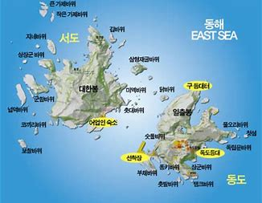

독도에 대한 정부 입장
정부 기본입장
우리 영토인 근거
||
독도의 지리정보
||
자료실
ID
PW

특성 정보
동도,서도로 나누어진 화산섬
천연가스,메탄 하이드레이트 등의 자원이 풍부함.
현재 독도경비대 40명 외 1가구 거주 중
지형이 가파르고 평지가 별로 없으며, 식수도 부족하여 많은 사람들이 살기 힘들다.
수심이 최대 2000m에 달한다.
본토에서 볼 수 없는 조류나 어류의 식생이 많으며 어족 자원이 많다.